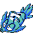
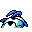

#225
Wimpod
BugWater
It startles at sudden noise and runs away. It hides among damp rocks.
Base stats Total 205
HP25
Attack35
Defense40
Speed80
Special25
Evolution
Pokédex data
- Species
- Hippo Pokémon
- Height
- 2'07"
- Weight
- 109.1 lb
- Catch rate
- 255 / 255
- Base experience
- 46
- Growth rate
- Medium Fast
Level-up moves 9
LevelMoveTypePowerAcc.PP
TM / HM moves 7
TM / HMMoveTypePowerAcc.PP